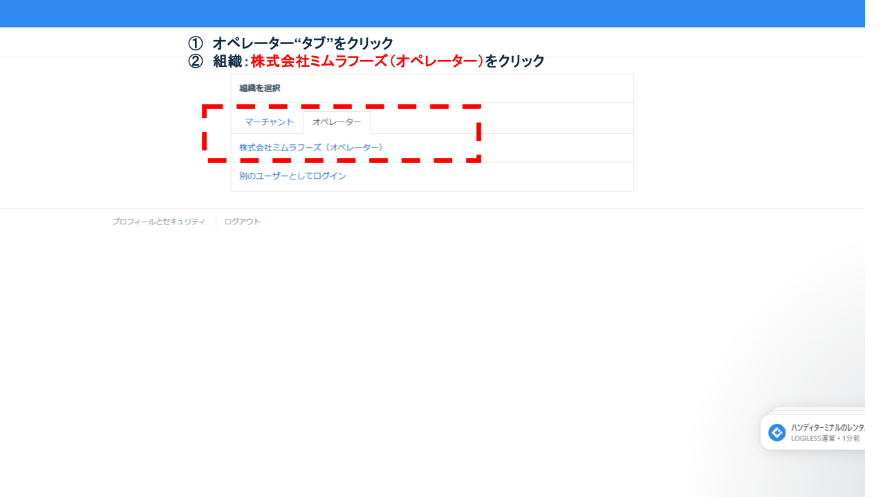

1. 使用ツールにログイン
ID・パスワードを使用してLOGIRESSにアクセスし、管理画面へログインします。

帳票類出力は、受注データに基づき出荷作業に必要な帳票をシステムから生成する業務です。誤出力や帳票不足は出荷ミスに直結するため、必須工程として正確性が求められます。
※ログイン情報は定期的に変更されるため、最新版はIT管理者に確認してください。外部公開時はマスキングまたは非表示。
| 項目 | 内容 |
|---|---|
| システム名 | LOGIRESS |
| ログインURL | https://app.logiless.com/ |
| ユーザーID | mimurafoods@googlegroups.com |
| パスワード | Mimura20250712 |
※ログイン情報は社内利用に限り平文可。外部公開時はマスキングまたは非表示。
| 項目 | 内容 |
|---|---|
| システム名 | プリンタ |
| 接続方法 | ネットワーク接続 |
| アカウント | なし |
※A4の用紙設定を確認
ID・パスワードを使用してLOGIRESSにアクセスし、管理画面へログインします。
ログイン後、画面上部の組織選択から「オペレーター」タブを選択し「株式会社ミムラフーズ（オペレーター）」を選択します。
左メインメニュー「出荷」を選択し、メイン画面の上部タブ「出荷作業中」を選びます。

作業を行う出荷グループ（yyyy/mm/dd）を選びます。

出荷作業中一覧の上部タブ「トータルピッキング」をクリックします。PDF画面を印刷します。

出荷作業中一覧の上部タブ「出荷作業中」をクリックします。PDF画面を印刷します。

出荷作業中一覧の上部タブ「納品書」をクリックします。PDF画面を印刷します。

| 作業項目 | R（実行） | A（責任） | C（相談） | I（共有） |
|---|---|---|---|---|
| 帳票類出力 | 出荷担当 | 商品管理責任者 | 受注・出荷指示担当 | 出荷担当 |